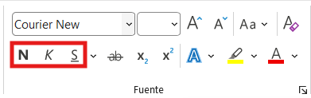

Formato de fuente y párrafo
Aplica formato profesional a tus documentos: negrita, tamaños, colores, alineación y listas.
Formato de fuente
El formato de fuente cambia la apariencia de las letras. Todas las opciones están en la pestaña Inicio, grupo Fuente.
| Herramienta | Atajo | Uso en documentos de gas |
|---|---|---|
| Negrita | Ctrl + N | Nombre de la empresa: Gas Butano Centroafricano |
| Cursiva | Ctrl + K | Notas aclaratorias: Precio válido hasta fin de mes |
| Subrayado | Ctrl + S | Destacar total a pagar: 22,500 XAF |
| Tamaño de fuente | - | Título: 16 pt. Texto normal: 12 pt. Nota pequeña: 9 pt. |
| Color de fuente | - | Títulos en azul oscuro corporativo. Texto normal en negro. |

Figura 1. Herramientas de formato de fuente en la pestaña InicioAlineación de párrafo
La alineación controla cómo se distribuye el texto respecto a los márgenes:
Izquierda
Texto pegado al margen izquierdo. Es la más usada para cartas y documentos formales.
Atajo: Ctrl + Q
Centrar
Texto centrado entre los márgenes. Ideal para títulos y encabezados de empresa.
Atajo: Ctrl + T
Derecha
Texto pegado al margen derecho. Útil para fechas y firmas.
Atajo: Ctrl + D
Justificar
Texto alineado en ambos márgenes. Aspecto muy profesional para párrafos largos.
Atajo: Ctrl + J
Listas numeradas y con viñetas
Para organizar información de forma clara en tus documentos:
Viñetas
Ideal para listas de productos o características:
- Bombona Doméstica 23 kg
- Bombona Industrial 68 kg
- Bombona Pequeña 12 kg
Lista numerada
Ideal para instrucciones paso a paso:
- Verificar peso de la bombona
- Entregar al cliente
- Firmar carta de entrega
- Cobrar el importe
Formato profesional para tu carta de entrega
Así debería verse el encabezado de tu carta de entrega:
- Gas Butano Centroafricano: Negrita, tamaño 16, centrado, color azul oscuro
- Entrega de Gas a Domicilio: Tamaño 12, centrado, cursiva
- Fecha: Alineada a la derecha, tamaño 10
- Datos del cliente: Alineados a la izquierda, tamaño 12, con "Cliente:" en negrita
Ejercicio práctico
Completa los atajos de teclado para cada formato.
1. Negrita: Ctrl +
2. Centrar texto: Ctrl +
3. Justificar: Ctrl +
4. Subrayado: Ctrl +